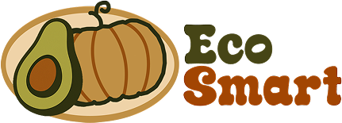

¿Qué factores afectan el rendimiento de un cultivo?
¿Qué enfermedades y plagas pueden afectar los cultivos?
¿Qué tan importante es la rotación de cultivos?
¿Qué tipo de suelo es el más adecuado para cultivar?
+